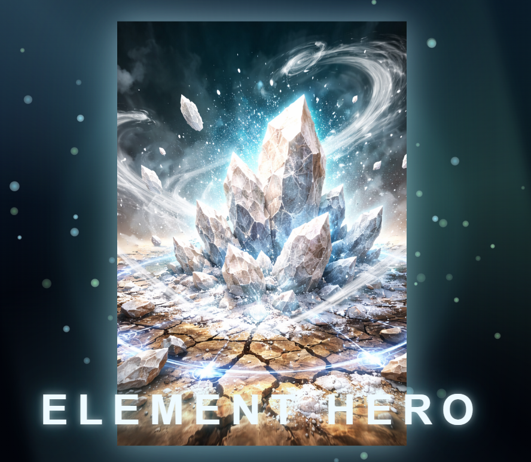
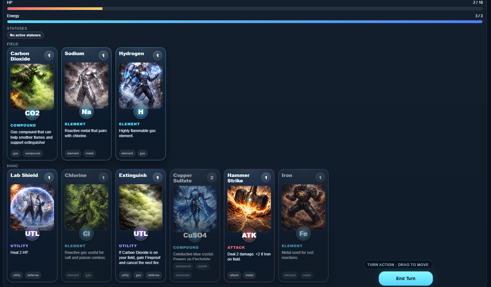

Element Hero.
Turning chemical elements into characters — and making chemistry more engaging to learn.
Open the playable chemistry card game in a new tab.
What if elements had superpowers?
In Grade 6, I designed a superhero inspired by platinum, turning its physical and chemical properties into abilities. It helped me remember science concepts in a creative way.
Years later, after seeing classmates struggle with chemistry, I wondered whether the same idea could become a game that others could enjoy.

From chemistry concepts to gameplay.
Element Hero is an online chemistry card game I created to make learning about elements and compounds more interesting. I designed cards based on chemical properties, then built a game where players manage energy, use cards from their hand and make decisions each turn. The game also tracks HP and status effects.

Actual gameplay screenshot · Element Hero
Building a learning game.
I wanted the cards to be fun while still reflecting real chemistry. Making the game digital also meant I could share it without printing physical decks.
I designed the concept and rules, used AI-assisted coding tools including Codex to help implement the game, and tested it with my younger brother.
Small steps, shared learning.
A Grade 6 platinum superhero project made science more memorable.
Designed element characters, game rules and an online experience.
Classmates tried the game, and teachers showed interest in sharing it with more students.
Helping others helps me learn.
A few classmates tried the game, and my teachers were interested in sharing it with other students. When classmates ask questions, I sometimes discover gaps in my own understanding and go back to learn more.
What matters to me is not just building a game, but making something useful and enjoyable for other students.
← Back to portfolio